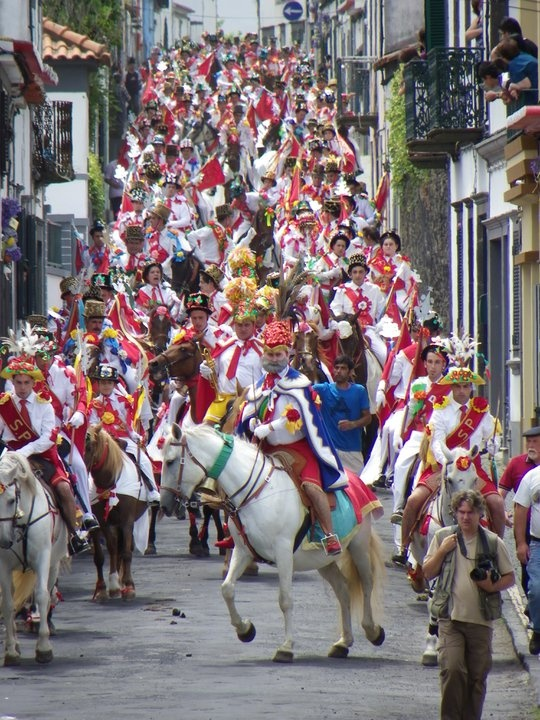
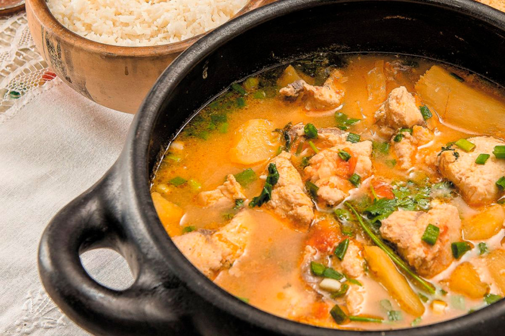

Ofício dos Mestres Cururueiros de Mato Grosso recebe plano decenal de salvaguarda cultural
Fonte: Agência Brasil / IPHAN · Cuiabá (MT)
Clique ou passe o cursor sobre qualquer unidade federativa para abrir a ficha técnica territorial, principais manifestações e culinária típica.
Coração do Cerrado com chapadões de quartzito, cachoeiras na Chapada dos Veadeiros e cidades históricas de pedra.
Cavalhadas de Pirenópolis, Procissão do Fogaréu na Cidade de Goiás, Folia do Divino.
Empadão Goiano com guariroba, Arroz com Pequi aromático, Pamonha salgada com queijo minas.

Dramatização colonial secular da disputa entre Cristãos (azul) e Mouros (vermelho) realizada durante a Festa do Divino Espírito Santo. Cavaleiros mascarados em trajes de cetim bordado a mão encenam corridas equestres com lanças em meio ao repique dos sinos das igrejas barrocas.
O Cururu é uma cantoria de desafio e louvação acompanhada pelo som oco e rítmico da viola de cocho — esculpida em tora inteira de ximbuva ou sarã. O Siriri une mulheres e homens descalços em passos acelerados marcados pelo ganzá e mocho.
Rios calcários de transparência absoluta que brotam no planalto da Bodoquena. A preservação ecológica rigorosa combina o ecoturismo sustentável com a herança dos povos indígenas Kadiwéu e Terena e a música de fronteira do chamamé.
O ritual das comitivas que conduzem o gado pelas vazantes pantaneiras. A queima do alho, o berrante tocado na madrugada e as histórias contadas ao redor do braseiro mantêm viva a secular cultura tropeira do Centro-Oeste.
A força aromática do pequi silvestre, a rica tradição da sopa paraguaia e a doçaria de tacho de cobre.

Grãos dourados cozidos no azeite com alho e polpa amarela de pequi. Prato símbolo que exige o ritual de raspar com os dentes sem morder a camada interna de espinhos.

Bolo salgado e úmido de milho ralado fresco, queijo meia cura e cebola refogada em abundância. Herança da culinária guarani e da Guerra da Tríplice Aliança.

Doce clássico de tacho de cobre com leite talhado no limão galego e açúcar cristal, formando grumos aveludados embebidos em calda dourada com canela em pau.

Cozido pantaneiro espesso com postas de peixe pintado ou pacu fresco, mandioca que se desmancha no caldo, coentro selvagem e urucum da mata.
“O Cerrado atua como a grande caixa-d'água do Brasil: suas raízes profundas recarregam os aquíferos que alimentam as três maiores bacias da América do Sul.”
As nascentes do planalto central distribuem água em todas as direções: para o norte alimentam a bacia Amazônica e o Tocantins-Araguaia; para o leste, o São Francisco; e para o sul, a bacia Platina com os rios Paraguai e Paraná.
O Pantanal, maior planície alagável contínua do globo, alterna períodos de cheia que cobrem até 80% do território com a seca estival, concentrando a maior densidade de fauna das Américas.